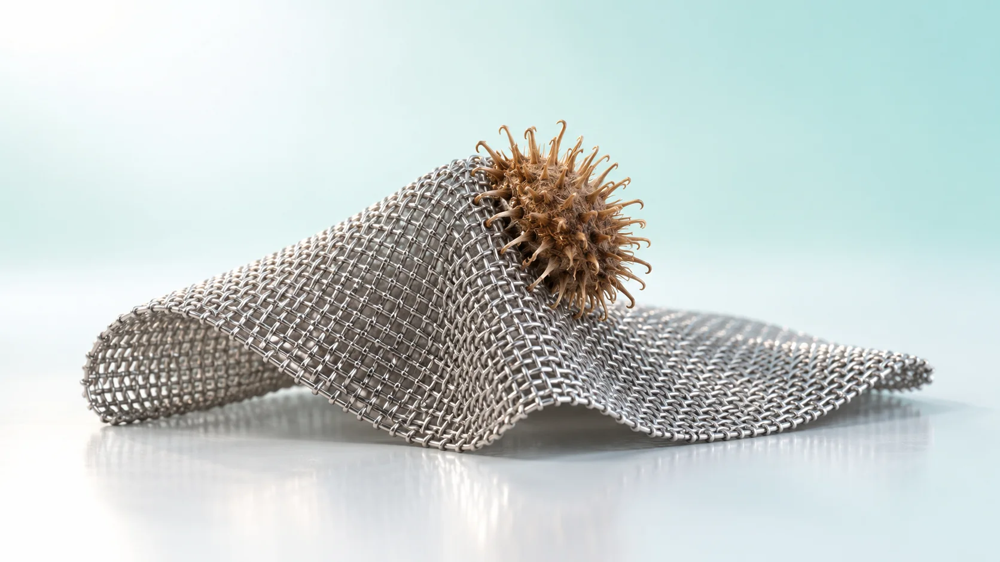
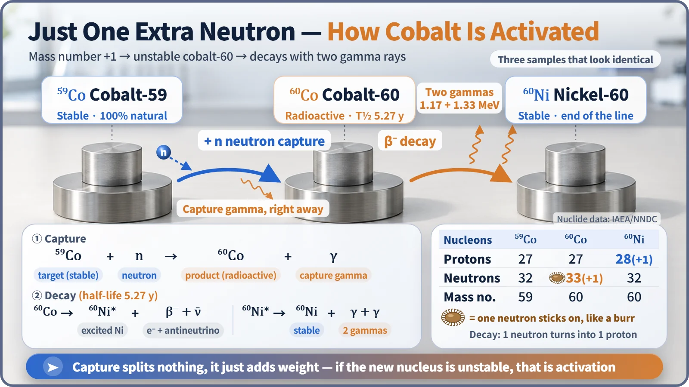
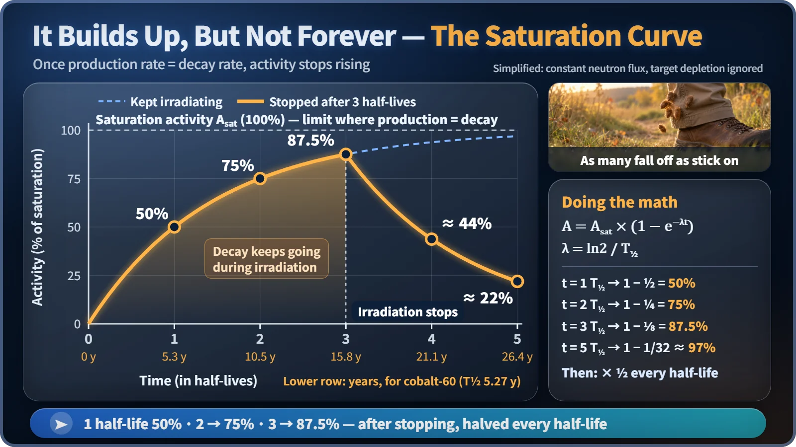

Nuclear Reactions & Fission · 046
Burrs on Your Trousers — How Neutron Capture Leads to Activation
A captured neutron does not split the nucleus. It only makes it heavier, but if the new nucleus is unstable, ordinary metal becomes radioactive.

When an atomic nucleus captures a neutron, it does not split; it just becomes one mass unit heavier. If the new nucleus is unstable, it will later decay and emit radiation, and the material has been activated. Cobalt-59 turning into cobalt-60 is the textbook case, and the main reason maintenance crews at light-water reactors receive radiation dose. [1]
The biggest dose for maintenance crews comes from... rust flakes?
Where does most of the radiation dose received by people doing maintenance at a nuclear power plant come from? The fuel seems like the obvious answer, but a large share actually comes from tiny metal particles lodged inside pipes and valves. They started out as ordinary bits of metal. After one trip around the reactor, they came out as material that gives off radiation on its own.
When an ordinary material turns into a radioactive one like this, it is called activation. At its starting point sits a very quiet nuclear reaction called neutron capture.
Walk through tall grass and the burrs hitch a ride
Push your way through a weedy field in autumn and you come out with spiky burrs stuck all over your trousers. The trousers are the same trousers, but now they are carrying something extra. Give it time, and the burrs drop off one by one with a little "tick."
The region around a reactor core is that weedy field, crowded with neutrons streaming out of fission. When the nucleus of a metal atom there grabs one of those neutrons, that is neutron capture. Specialists call it an (n,γ) reaction: a neutron (n) goes in and a gamma ray (γ) comes out. The nucleus that swallowed the neutron is left with spare energy, in an excited state, and it sheds that surplus right away as a gamma ray.
Unlike fission, the nucleus does not split. The number of protons stays the same, so the element keeps its name; only the mass number (protons plus neutrons) goes up by 1. Uranium-238 capturing a neutron and becoming the starting point for plutonium is this very reaction.
The trouble starts after the catch: cobalt's transformation
If the nucleus with its extra neutron is stable, nothing more happens. When the hydrogen in a water molecule captures a neutron, it becomes deuterium, which is stable and not radioactive. The trouble comes when the new nucleus is unstable. Then it is a radioactive nuclide that will eventually decay and emit radiation, and that is activation.
The star example is cobalt. Natural cobalt is 100% cobalt-59, a stable nuclide. When it captures a neutron, it becomes cobalt-60. Cobalt-60 beta-decays with a half-life of about 5.27 years into stable nickel-60, and almost every time it sends out two gamma rays together, at 1.17 MeV and 1.33 MeV. These gammas are highly penetrating, so shielding is essential. The burr analogy has a limit here: the captured neutron does not fall back out. One neutron inside the nucleus turns into a proton, and that is how cobalt becomes nickel. [2]

So where is the cobalt in a reactor? It shows up as a trace impurity in the alloy of steam generator tubes, and in the cobalt-based hard-facing alloys laid over the wearing surfaces of valves. As these metals slowly corrode and wear, the particles mix into the cooling water, pass through the core and become cobalt-60, then stick again to the inner walls of piping outside the core. That is why cobalt-60 is named as the single biggest contributor to maintenance-worker dose at light-water reactors, and why plants choose low-cobalt materials and keep a tight grip on cooling-water chemistry. [3]
Do the burrs pile up forever? The secret of saturation
If you keep walking through the field, will the burrs keep multiplying without end? No. As some stick, others fall off, so at some point the count stops rising. Activation works the same way. While a material is being irradiated, new cobalt-60 is made at a steady rate, but the cobalt-60 already there keeps decaying. So the activity grows like this:
A = Asat × (1 − e−λt)
Asat is the ceiling, where the production rate equals the decay rate; λ is the decay constant, which says how fast decay happens; and t is the irradiation time. In units of half-lives it becomes very simple. [4]
| Irradiation time | Calculation | Share of saturation |
|---|---|---|
| 1 half-life | 1 − 1/2 | 50% |
| 2 half-lives | 1 − 1/4 | 75% |
| 3 half-lives | 1 − 1/8 | 87.5% |
| 5 half-lives | 1 − 1/32 | about 97% |
For cobalt-60, that means more than 26 years of irradiation to get close to saturation. Once irradiation stops, the activity halves with every half-life. Stop at 87.5% after three half-lives, and one half-life later it is down to about 44%, two half-lives later about 22%. This is also why the structural materials of a reactor that has run for a long time carry activity close to saturation.

Same principle, two faces
Sometimes this principle is used on purpose. Put pieces of cobalt-59 metal into a reactor and activate them, and you get cobalt-60 sources for medicine and industry. They are used for gamma sterilization of medical supplies such as syringes, for non-destructive testing that looks inside metal welds, and in radiosurgery equipment that targets lesions in the brain.
Activation is also central when a plant is dismantled. Once the spent fuel has been removed, nearly all of the radioactivity left behind sits in metal that took neutrons for decades, such as the reactor pressure vessel and its internal structures. By weight, though, most of the dismantling volume has no radioactivity or only a very low level. Short-lived nuclides like cobalt-60 fade if you wait, but nuclides like nickel-63, with a half-life of about 100 years, have to be managed at the disposal stage. When to dismantle is judged differently by each country and operator, weighing these characteristics. [5]
Does an object exposed to gamma rays become radioactive?
No. The X-rays used in hospitals and the gamma rays used to sterilize food and medical supplies do not add neutrons to atomic nuclei, so they do not cause activation. The main actor in activation is the neutron.
Activation is also different from contamination. Contamination means radioactive material has landed on a surface, so you can wipe it off. Activation means the atomic nuclei inside the material have themselves changed, so no amount of scrubbing removes it.
Key takeaways
Neutron capture makes a nucleus heavier without splitting it; if the product is unstable, the material is activated. Activity builds toward a saturation ceiling during irradiation and halves every half-life afterward. What material received how many neutrons, and for how long: a reactor's choice of materials, its maintenance and its decommissioning plan all start from that question.